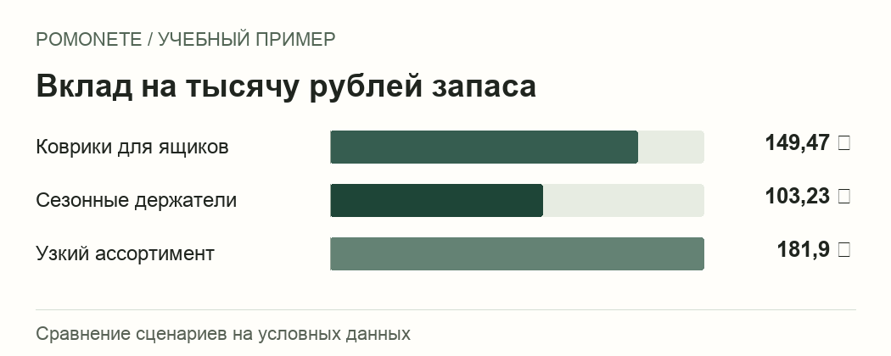

Что приносит тысяча рублей запаса у селлера Яндекс Маркета
Как ранжировать группы по внесённому в запас капиталу и вкладу периода.
Владелец магазина крепежа может расширить ассортимент на Яндекс Маркете за счёт оборотных денег. Для сравнения важно знать, какая группа даёт вклад на одинаковую сумму в запасе. Берём среднюю закупочную стоимость остатков и обсуждаем показатель вместе с риском недоступности.
Какие остатки усреднять
Снимайте складской остаток с одинаковым шагом и по одной оценке закупки. Для долгих поставок отдельно посмотрите товар, на который деньги уже потрачены, но который ещё не доступен. Уточните, включает ли показатель запас у поставщика по выплаченному авансу.
Чтобы пересобрать расчёт «Вклад на тысячу рублей запаса» для своего магазина, перенесите в него исходные числа. В формуле A обозначает «вклад товарной группы, ₽», B обозначает «средняя стоимость остатка, ₽», C обозначает «рубли для сравнения». Сначала оценивается интенсивность на единицу базы, затем она применяется к новому объёму. Допущение о постоянной интенсивности требует проверки. Запишите рядом период и охват каждого среза. Для оценочных строк оставьте пояснения рядом с исходными значениями. При чтении сводки будет видно, какие из них пока подтверждены.
Вклад на тысячу рублей запаса = A ÷ B × C
| Условие | Вклад товарной группы, ₽ | Средняя стоимость остатка, ₽ | Рубли для сравнения | Вклад на тысячу рублей запаса |
|---|---|---|---|---|
| Коврики для ящиков | 28 100 | 188 000 | 1 000 | 149,47 ₽ |
| Сезонные держатели | 32 000 | 310 000 | 1 000 | 103,23 ₽ |
| Узкий ассортимент | 21 100 | 116 000 | 1 000 | 181,9 ₽ |

В сценарии «Коврики для ящиков» в формулу подставляем вклад товарной группы, ₽ = 28 100, средняя стоимость остатка, ₽ = 188 000, рубли для сравнения = 1 000. Получается 149,47 ₽. Ходовой ассортимент регулярно пополняется, а средний запас основан на ежедневных снимках.
В сценарии «Сезонные держатели» в формулу подставляем вклад товарной группы, ₽ = 32 000, средняя стоимость остатка, ₽ = 310 000, рубли для сравнения = 1 000. Получается 103,23 ₽. Маржинальный доход выше в рублях, но денег в остатках занимает больше.
В сценарии «Узкий ассортимент» в формулу подставляем вклад товарной группы, ₽ = 21 100, средняя стоимость остатка, ₽ = 116 000, рубли для сравнения = 1 000. Получается 181,9 ₽. Доля редких вариантов ниже. Снимки взяты за то же окно и по той же стоимости.
Если «Коврики для ящиков» взять за исходную точку, «Сезонные держатели» меняет показатель «вклад на тысячу рублей запаса» на -46,24 ₽, а «Узкий ассортимент» на 32,43 ₽. Между двумя последними строками разница составляет 78,67 ₽ при вычитании второй из третьей. Смотрите, какой именно вход изменился между строками. Если менялись объём и условия одновременно, итог сравнения относится ко всему сочетанию.
При расчёте «вклад на тысячу рублей запаса» оставляйте исходную точность, пока складываете значения и сверяете строки. В таблице видны 149,47 ₽, 103,23 ₽ и 181,9 ₽, уже округлённые для чтения. При суммировании многих периодов используйте исходные данные. Например, удельные результаты с разными знаменателями нужно пересобрать из числителей и соответствующих объёмов, а затем округлить. Пометьте, где округление применяется, чтобы при передаче отчёта речь шла об одних и тех же числах.
Почему низкий запас повышает цифру
Товар может хорошо выглядеть на тысячу рублей, если часто продавался последними штуками. Итог по группе может быть ниже возможного из-за дней без наличия. Проверьте потерянный спрос, срок пополнения и число рабочих часов предложения на витрине.
Воспроизводимость здесь начинается с критериев включения. Отметьте, чем «Коврики для ящиков» отличается от «Узкий ассортимент» и какие наблюдения будут отброшены в каждой строке. Как подтверждение используйте экономика заказов и собственная закупочная ведомость. У неполных записей выделите одну причину. Она покажет, какие цифры ещё стоит собирать и какой объём анализа потерян.
Выгрузка маркетплейса даёт начисления по операциям. Собственную стоимость закупки, труд и расходники подставляют из учёта магазина с датой действия. Для решения по ассортименту разделите повторяющиеся переменные расходы, затраты на запуск и текущие фиксированные расходы команды. После изменения предложения обновляются и продажи соседних изделий. Счёт по одному товару имеет смысл дополнить итогом той группы, между вариантами которой может переключиться покупатель.
Что сильнее всего меняет результат
От результата 103,23 ₽ в строке «Сезонные держатели» пересчитайте несколько вариантов. Проверьте «вклад товарной группы, ₽», «средняя стоимость остатка, ₽», «рубли для сравнения». Прибавка около десятой доли на вход показывает реакцию за один шаг. Целые числа сохраняем целыми. Для долей, где прирост выводит числитель за предел базы, пробуем уменьшение. Все остальные параметры при каждой подстановке сохраняются.
- «Вклад товарной группы, ₽» меняется с 32 000 на 35 200. При прежних остальных входах получается 113,55 ₽, сдвиг составляет 10,32 ₽.
- «Средняя стоимость остатка, ₽» меняется с 310 000 на 341 000. При прежних остальных входах получается 93,84 ₽, сдвиг составляет -9,38 ₽.
- «Рубли для сравнения» меняется с 1 000 на 1 100. При прежних остальных входах получается 113,55 ₽, сдвиг составляет 10,32 ₽.
Больше всего изменила итог подстановка «вклад товарной группы, ₽». Отклонение составило 10,32 ₽. До сбора новых данных оцените, насколько правдоподобен такой шаг. Например, расход может подтверждаться документом, а объём пока наблюдается лишь частично. Уточняйте прежде всего те входы, где одновременно возможен заметный сдвиг и мало подтверждений.
В коротком периоде расход на склад попадает в разные даты. Посчитайте тот же показатель за более длинное окно и сохраните обе оценки. Если сезонная группа изменилась на акции, делайте сравнение при сопоставимой доле промодней.
Как распределить новую закупку
До решения посмотрите вклад с учётом повторяемости спроса и диапазон среднего запаса, необходимого для выбранного уровня доступности. Затем найдите группу, где дополнительный рубль запаса действительно даёт дополнительные продажи. Итог оставьте рядом с прогнозом свободных денег.
Поставьте рядом плановую и фактическую строки сделки с сохранённой себестоимостью. Проверку удобнее начинать с позиций, на которые приходится основной вклад, потом выделять случаи с нестандартной логистикой, возвратом или разовой скидкой. Если после смены состава продаж средняя величина улучшилась, восстановите исходные веса и оцените, сколько прироста действительно получилось на сопоставимых позициях.
Чтобы отделить ошибку оценки от реального изменения, после следующего отчёта соберите «вклад на тысячу рублей запаса» дважды. Сначала используйте исходное правило, затем замените только один предположенный вход фактическим. Так аналитика селлера Яндекс Маркета покажет, стоит ли тратить время на повторный замер или менять рабочую операцию. В итоговом отчёте сохраните обе даты проверки.